| variable | name | description | variable_type |
|---|---|---|---|
| part_id | Participant ID | Unique identifier for each participant | categorical |
| sex | Participant's sex | Sex of the participant | categorical |
| group | Time group | Longitudinal group to which the participant belongs | ordinal |
| month_age | Participant's age in months | Age of the participant in months | numeric |
| utt_id | Utterance ID | Unique identifier for each utterance | numeric |
| word_id | Word ID | Unique identifier for each word within an utterance | numeric |
| word | Word | The word spoken by the participant | categorical |
| lemma | Word lemma | Base form of the word | categorical |
| pos | Part of speech | Grammatical category of the word | categorical |
3 Approaching analysis
Draft
Ready for review.
Statistical thinking will one day be as necessary for efficient citizenship as the ability to read and write.
— H.G. Wells
In this chapter I will build on the notions of data and information from the previous chapter. The aim of analysis is to derive knowledge from information, the next step in the DIKI Hierarchy. Where the creation of information from data involves human intervention and conscious decisions, as we have seen, deriving knowledge from information involves another level of intervention. The goal is to break down complex information into simpler components which are more readily interpretable. In what follows, we will cover the main steps in the process of analysis. The first is to inspect the data to ensure its quality and understand its characteristics. The second is to interrogate the data to uncover patterns and relationships and interpret the findings. To conclude this chapter I will outline methods to and the importance of communicating the analysis results and procedure in a transparent and reproducible manner.
3.1 Diagnose
The purpose of diagnostic measures is to inspect your data to ensure its quality and understand its characteristics. There are two primary types of diagnostic measures: verfication and description. Verification methods are applied to catch missing or erroneous data while descriptive methods are used to gain a better understanding of the data. Although treated in two separate sections, in practice these methods are complementary and are often addressed in tandem.
To ground this discussion I will introduce a new dataset. This dataset is drawn from the Barcelona English Language Corpus (BELC) (Muñoz 2006), which is found in the TalkBank repository. I’ve selected the “Written composition” task from this corpus which contains 80 writing samples from 36 second language learners of English at different ages. Participants were given the task of writing for 15 minutes on the topic of “Me: my past, present and future”. Data was collected for participants from one to three times over the course of seven years (at 10, 12, 16, and 17 years of age).
In Table 3.1 we see the data dictionary for the BELC dataset which reflects structural and transformational steps I’ve done so we start with a tidy dataset with word as the unit of observation.
The data dictionary provides a easily accessible overview of the dataset. This includes a human-readable mapping from variable names to variable descriptions. Further, it provides information about the type of variable (e.g., categorical, ordinal, numeric). As we will see the informational type of variables is key to diagnostic measures, as well as all other components of analysis.
3.1.1 Verify
Although a dataset has undergone curation and transformation, it is still important to verify the data. This is a process of checking the data to ensure that it is accurate and complete. In the case that it is not, consideration should be given to how to address the issues.
The most basic and usually the first step is to check for missing data to ensure that all necessary data points are present. In Table 3.2, there are missing values for the lemma and pos variables in the BELC dataset.
| variable | type | n_missing | complete_rate |
|---|---|---|---|
| part_id | character | 0 | 1.000 |
| sex | character | 0 | 1.000 |
| group | character | 0 | 1.000 |
| word | character | 0 | 1.000 |
| lemma | character | 79 | 0.985 |
| pos | character | 23 | 0.996 |
| month_age | numeric | 0 | 1.000 |
| utt_id | numeric | 0 | 1.000 |
| word_id | numeric | 0 | 1.000 |
There are two primary approaches to dealing with missing data: deletion and recoding. Since these missing values account for only 1.5% and 0.4% of the data respectively, we might be safe to remove these observations. Another approach is to recode the missing values by either applying a unique value for missing values (e.g., NULL) or by imputing values. Imputing values is usually done by replacing missing values with some middle-of-the-road value (e.g., mean, median, mode), but other, more nuanced approaches are possible.
In either case, it is important to consider the implications of missing data for the analysis. For example, if the missing data is not at random or include a sizeable portion of the values of interest, then the analysis may be biased.
Value coding schemes, annotation errors, or other issues may result in anomalies in the data. These are values that are unusual, unexpected, or inconsistent with the rest of the data or effect the treatment of the data for the particular analysis to be performed.
For categorical variables, this may include values that are not expected or are not in the set of values that are expected. A summary of the values for a given variable can be used as a first step to identify anomalies. In Table 3.3, we see the minimum and maximum number of characters and the number of unique values for each categorical variable in the BELC dataset.
| variable | min_chars | max_chars | num_unique |
|---|---|---|---|
| part_id | 3 | 3 | 36 |
| sex | 4 | 6 | 2 |
| group | 2 | 2 | 4 |
| word | 1 | 20 | 913 |
| lemma | 1 | 20 | 774 |
| pos | 1 | 9 | 38 |
From our knowledge of the data, we can gauge whether these values are expected. For example, sex has two values; likely corresponding to some coding of ‘male’ and ‘female’. The variable part_id has 36 distinct values, which is expected since there are 36 participants and group has four, corresponding to the longitudinal time groups. It is also possible to gauge the expected values for lemma as we know that these are the base words and should be less than the number of words in the dataset.
Further verfication of the categorical variables is need, of course. This may include aggregating the data to see the distribution of values and/ or checking the values against the documentation.
Let’s now consider numeric variables. Numeric variables, by their very nature, do not lend themselves to the same type of summary used for categorical variables (i.e. character lengths, number of unique values, or aggregation) to detect anomalies. For numeric variables there are two types of anomalies that we will consider: outliers and errors in coding. Outliers are anomalies that are extreme values that are not representative of the great majority of the data points. To determine what is extreme, we need to consider the distribution of the data, that is, the range of values and the frequency of values. It is rarely the case that we can eyeball the distribution of the data based on raw values. Instead, a combination of summary statistics and visualizations are used to determine the distribution of the data. For this reason, the detection of outliers is often carried out as part of the descriptive assessment of the data, as we will see in Section 3.1.2.
On the other hand, coding anomalies are values that are not expected or are not in the set of values that are expected. These can sometimes be detected by visual inspection of the data. For example, in Table 3.4, we see the first 10 observations for each variable in the BELC dataset.
| part_id | sex | group | month_age | utt_id | word_id | word | lemma | pos |
|---|---|---|---|---|---|---|---|---|
| L01 | female | T2 | 153 | 0 | 0 | I | I | pro:sub |
| L01 | female | T2 | 153 | 0 | 1 | was | be | cop |
| L01 | female | T2 | 153 | 0 | 2 | born | born | adj |
| L01 | female | T2 | 153 | 0 | 3 | in | in | prep |
| L01 | female | T2 | 153 | 0 | 4 | Barcelona | Barcelona | n:prop |
| L01 | female | T2 | 153 | 0 | 5 | and | and | coord |
| L01 | female | T2 | 153 | 0 | 6 | I | I | pro:sub |
| L01 | female | T2 | 153 | 0 | 7 | live | live | v |
| L01 | female | T2 | 153 | 0 | 8 | in | in | prep |
| L01 | female | T2 | 153 | 0 | 9 | Barcelona | Barcelona | n:prop |
Leaving month_age aside, we see that the other two numeric variables utt_id and word_id index utterances and words respectively. However, in contrast to part_id which is a categorical variable as it serves as a unique identifier for each participant, these variables are numeric as they serve to not only index utterances and words but also to provide a measure of how many utterances or words have been produced. Seen in this light, 0 for the first value of utt_id and word_id is unexpected. To adjust for this, we can add 1 to each value of these variables.
3.1.2 Describe
The goal of descriptive statistics is to summarize the data in order to understand and prepare the data for the analysis approach to be performed. This is accomplished through a combination of statistic measures and/ or tabular or graphic summaries. The choice of descriptive statistics is guided by the type of data, as well as the question(s) being asked of the data.
To that end, let’s consider a reconfiguration of the BELC dataset, in Table 3.5, which will provide a more illustrative dataset.
| essay_id | part_id | sex | group | tokens | types | ttr | prop_l2 |
|---|---|---|---|---|---|---|---|
| E1 | L01 | female | T2 | 79 | 46 | 0.582 | 0.987 |
| E2 | L02 | female | T1 | 18 | 18 | 1.000 | 0.667 |
| E3 | L02 | female | T3 | 101 | 53 | 0.525 | 1.000 |
| E4 | L05 | female | T1 | 20 | 17 | 0.850 | 0.900 |
| E5 | L05 | female | T3 | 158 | 80 | 0.506 | 0.987 |
| E6 | L05 | female | T4 | 184 | 94 | 0.511 | 0.995 |
| E7 | L07 | male | T3 | 98 | 60 | 0.612 | 1.000 |
| E8 | L07 | male | T4 | 134 | 84 | 0.627 | 0.978 |
| E9 | L10 | female | T1 | 38 | 28 | 0.737 | 0.974 |
| E10 | L10 | female | T3 | 118 | 74 | 0.627 | 1.000 |
In this new configuration, the unit of observation is now essay_id. Each of the following variable are attributes or measures of this variable. The new variables in this dataset are aggregates of the previous BELC dataset: tokens is the number of total words, types is the number of unique words, ttr is the ratio of unique words to total words. This is known as the Type-Token Ratio and it is a standard metric for measuring lexical diversity. Finally, the proportion of L2 words (English) to the total words (tokens) is provided in prop_l2.
In descriptive statistics, there are four basic questions that are asked of each of the variables in the dataset. Each correspond to a different type of descriptive measure.
- Central Tendency: Where do the data points tend to be located?
- Dispersion: How spread out are the data points?
- Distribution: What is the overall shape of of the data points?
- Interdependence: How are these data points related to other data?
Central tendency
The central tendency is measure which aims to summarize the data points in a variable as the most representative, middle or most typical value. There are three common measures of central tendency: the mode, mean and median. Each differ in how they summarize the data points.
The mode is the value, or values, that appears most frequently in a set of values. If there are multiple values with the highest frequency, then the variable is said to be multimodal. The most versatile of the central tendency measures as it can be applied to all levels of measurement, although the mode is not often used for numeric variables as it is not as informative as other measures.
The more common measures for numeric variables are the mean and the median. The mean is a summary statistic calculated by summing all the values and dividing by the number of values. The median is calculated by sorting all the values in the variable and then selecting the middle value. Given that the mean and median are calculated differently, they will not always yield the same result. Differences that appear between the mean and median will be of interest to us later in this chapter.
Dispersion
The mean, median, and mode provide summary information where data points tend to be located. However, they do not provide us with any understanding as to how representative this value is. To provide this context, the spread of the values around the central tendency, or dispersion, is calculated.
For categorical variables, the spread is framed in terms of how balanced the values are across the levels. One way to do this is to calculate the (normalized) entropy. Entropy is a measure of uncertainty. The more balanced the values are across the levels, the higher the entropy. The less balanced the values are across the levels, the lower the entropy. Normalized entropy scores range from 0 to 1, with 0 indicating that all the values are the same and 1 indicating that all the values are different.
The most common measure of dispersion for numeric variables is the standard deviation. The standard deviation is calculated by taking the square root of the variance. The variance is the average of the squared differences from the mean. So, more succinctly, the standard deviation is a measure of the spread of the values around the mean. Where the standard deviation is anchored to the mean, the interquartile range (IQR) is tied to the median. The median represents the sorted middle of the values, in other words the 50th percentile. The IQR is the difference between the 75th percentile and the 25th percentile. Again, just as the mean and the median, the standard deviation and the IQR are calculated in different ways, they are not always the same.
Let’s now consider the relevant central tendency and dispersion of the variables in the BELC dataset in Table 3.6.
Table 3.6: Central tendency and dispersion of the variables in the BELC dataset
| variable | top_counts | norm_entropy |
|---|---|---|
| essay_id | E1: 1, E10: 1, E11: 1, E12: 1 | 1.000 |
| part_id | L05: 3, L10: 3, L11: 3, L12: 3 | 0.983 |
| sex | fem: 48, mal: 32 | 0.971 |
| group | T1: 25, T3: 24, T2: 16, T4: 15 | 0.981 |
| variable | mean | median | sd | iqr |
|---|---|---|---|---|
| tokens | 67.62 | 56.50 | 44.20 | 61.25 |
| types | 41.85 | 38.50 | 23.03 | 31.50 |
| ttr | 0.68 | 0.66 | 0.13 | 0.15 |
| prop_l2 | 0.96 | 0.99 | 0.10 | 0.03 |
In Table 3.6 (a) we see the measures for categorical variables. The top_counts variable gives us a short list of the most frequent levels of the variable. From top_count we can gather whether the variable has one mode or is multimodel. Both essay_id and part_id have the same most frequent value for the levels listed. On the other hand, sex and group have a single mode. We can also appreciate the dispersion of these variables based on the norm_entropy of each variable. essay_id is completely balanced across the levels, so it has a normalized entropy of 1. the other variables are not as balanced, but still quite balanced as the normalized entropy is close to 1.
In Table 3.6 (b) the numeric variables have a column for the mean, median, standard deviation, and IQR for each. The variable tokens has a larger difference between the mean and median than the other variables and the standard deviation is relatively large suggesting that the values are more spread out around the mean. In the case of ttr the mean and median are quite close and the standard deviation is relatively small suggesting that the values are more tightly clustered around the mean.
When interpreting these summary values, it is important to only directly compare column-wise. That is, focusing only on a single variable, not across variables. Each variable, as is, is measured on a different scale and only relative to itself can we make sense of the values.
However, we can transform the central tendency and dispersion scores for numeric variables to make them more comparable by standardizing the scale of the values. Standardization is a scale-based transformation that changes the scale of the values to a common scale, or z-scores. It involves two separate transformations: centering and scaling. Centering is a transformation that subtracts the mean or median from each value. The result is a mean and median of zero. Scaling is a transformation that divides each value by the standard deviation or IQR.
In Table 3.7, we see the same summary statistics as in Table 3.6 (b), but the values have been standardized for the mean and standard deviation. The mean is now zero and the standard deviation is one. This allows us to compare the median and IQR of the variables more directly.
| variable | mean | median | sd | iqr |
|---|---|---|---|---|
| tokens | 0 | -0.25 | 1 | 1.39 |
| types | 0 | -0.15 | 1 | 1.37 |
| ttr | 0 | -0.19 | 1 | 1.14 |
| prop_l2 | 0 | 0.25 | 1 | 0.27 |
One more caveat to keep in mind is that we need to be mindful of the nature of the data being standardized and what the standardized values mean. For example, the variables tokens and types were originally counts. But the standardized values are not interpretable as counts, they are now on a different scale –specifically a z-score scale. In the same way since the ttr and prop_l2 variables were originally proportions, the standardized values are also not interpretable as proportions. One additional twist, however, is that the original scales for these pairs of variables were not the same: tokens and types were counts, but ttr and prop_l2 were proportions. So, even though the standardized values are on the same scale, they are not directly comparable.
Beyond comparing central tendency and dispersion across variables, standarization is useful for analytic statistics to mitigate the influence of variables with large values. In some cases, the statistical method will require standardization of variables before analysis.
Distributions
Summary statistics of the central tendency and dispersion of a variable provide a sense of the most representative value and how spread out the data is around this value. However, to gain a more comprehensive understanding of the variable, it is key to consider the frequencies of all the data points. The distribution of a variable is the pattern or shape of the data that emerges when the frequencies of all data points are considered. This can reveal patterns that might not be immediately apparent from summary statistics alone. Understanding the frequency and distribution of data points is vital as it informs subsequent choices of statistical analysis and evaluative methods, ensuring they are appropriate for the specific characteristics of the data.
When assessing the distribution of categorical variables, we can use a frequency table or bar plot. A frequency table is a useful method to display the frequency and proportion of each level in a categorical variable in a clear and concise manner. In Table 3.8 we see the frequency table for the variable sex.
| sex | frequency | proportion |
|---|---|---|
| female | 48 | 0.6 |
| male | 32 | 0.4 |
A bar plot is a type of plot where the x-axis is a categorical variable and the y-axis is the frequency of the values. The frequency is represented by the height of the bar. The variables can be ordered by frequency, alphabetically, or some other order. Figure 3.1 is a bar chart for the variables sex, group, and part_id, ordered alphabetically.
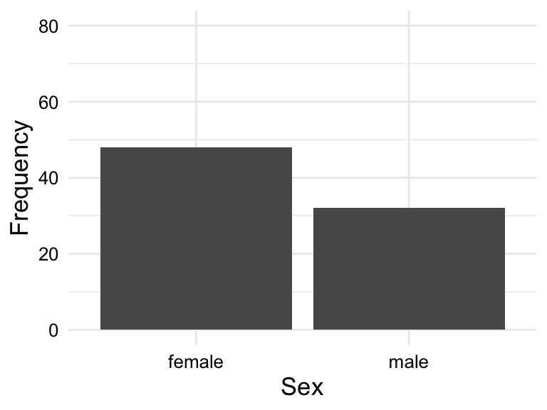
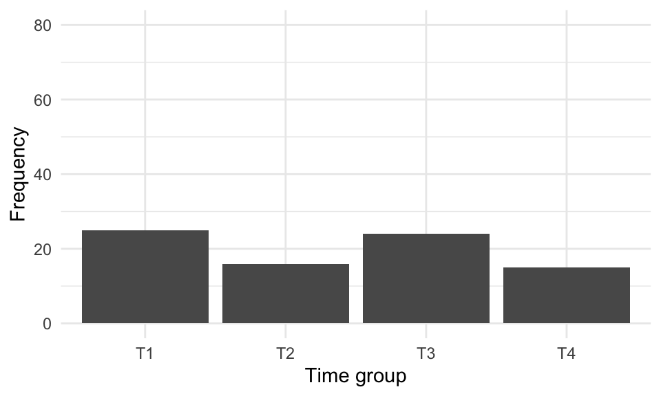
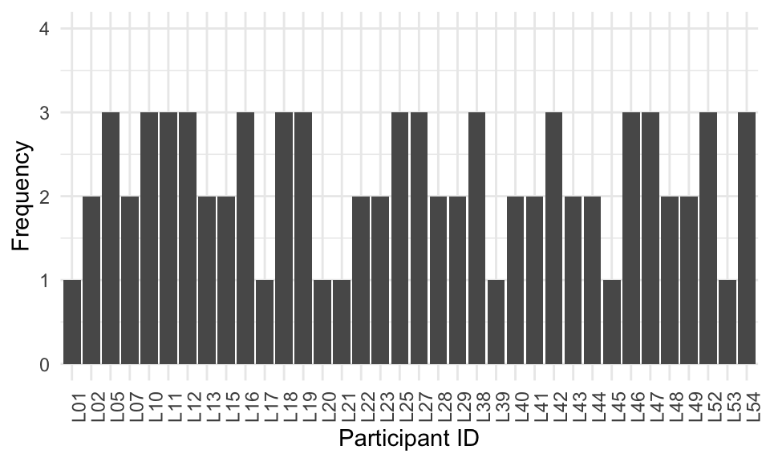
sex, group, part_id in the BELC dataset.So for a frequency table or barplot, we can see the frequency of each level of a categorical variable. This gives us some knowledge about the BELC dataset: there are more girls in the dataset, more essays appear in first and third time groups, and the number of essays written by each participant is scattered from one to three. If we were to see any clearly loopsided categories, this would be a sign of imbalance in the data and we would need to consider how this might impact our analysis.
For numeric variables, understanding the distribution is more complex, and also more important. In essence, however, we are assessing two things: the appearance of outliers in relation to and the overall shape of the distribution.
Now, a frequency table, as in Table 3.8, does not summarize the distribution of a numeric variable in a concise, readily human-consumable format. Instead, the distribution of a numeric variable is best understood visually.
The most common visualizations of the distribution of a numeric variable are histograms and density plots. Histograms are a type of bar plot where the x-axis is a numeric variable and the y-axis is the frequency of the values falling within a determined range of values, or bins. The frequency of values within each bin is represented by the height of the bars. Density plots are a smoothed version of histograms. The y-axis of a density plot is the probability of the values. When frequent values appear closely together, the plot line is higher. When the frequency of values is lower or more spread out, the plot line is lower. An example of these plots is show in Figure 3.2 for the variable tokens.


tokens.Both the histogram in Figure 3.2 (a) and the density plot in Figure 3.2 (b) show the distribution of the variable tokens in slightly different ways which translate into trade-offs in terms of interpretability.
The histogram shows the frequency of the values in bins. The number of bins and/ or binwidth can be changed for more or less granularity. A rough grain histogram shows the general shape of the distribution, but it is difficult to see the details of the distribution. A fine grain histogram shows the details of the distribution, but it is difficult to see the general shape of the distribution. The density plot shows the general shape of the distribution, but it hides the details of the distribution. Given this trade-off, it is often useful explore outliers with histograms and the overall shape of the distribution with density plots.
In Figure 3.3 we see histograms for the variables tokens, types, and ttr.
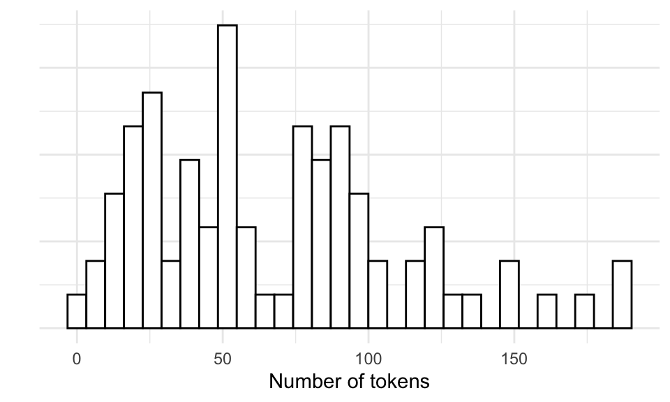
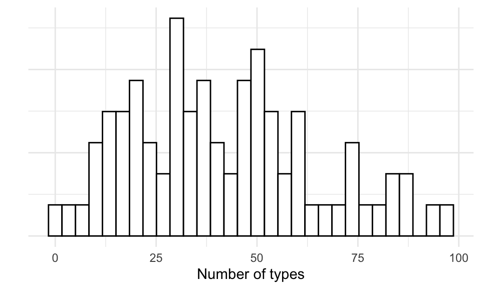
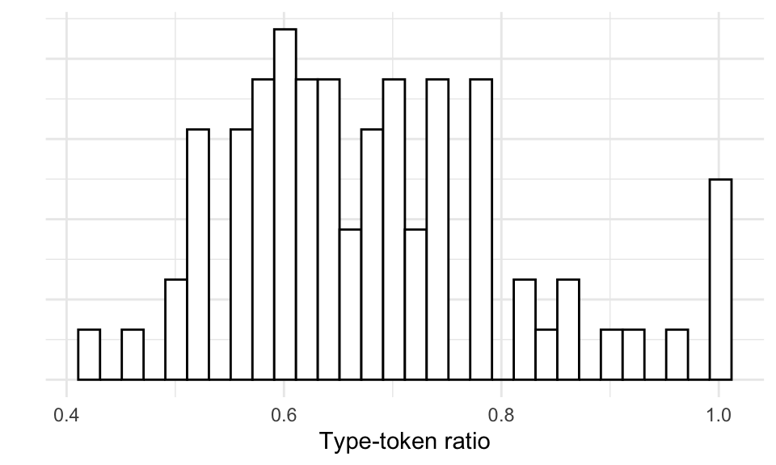
tokens, types, and ttr.Focusing on the details captured in the histogram we are better able to detect potential outliers. Outliers can reflect valid values that are simply extreme or they can reflect something erroneous in the data. To distinguish between these two possibilities, it is important to know the context of the data. Take, for example, Figure 3.3 (c). We see that there is a bin near the value 1.0. Given that the type-token ratio is a ratio of the number of types to the number of tokens, it is unlikely that the type-token ratio would be exactly 1.0 as this would mean that every word in an essay is unique. Another, less dramatic, example is the bin to the far right of Figure 3.3 (a). In this case, the bin represents the number of tokens in an essay. An uptick in the number of essays with a large number of tokens is not surprising and would not typically be considered an outlier. On the other hand, consider the bin near the value 0 in the same plot. It is unlikely that a true essay would have 0, or near 0, words and therefore a closer look at the data is warranted.
It is important to recognize that outliers contribute undue influence to overall measures of central tendency and dispersion. To appreciate this, let’s consider another helpful visualization called a boxplot. A boxplot is a visual representation which aims to represent the central tendency, dispersion, and distribution of a numeric variable in one plot.
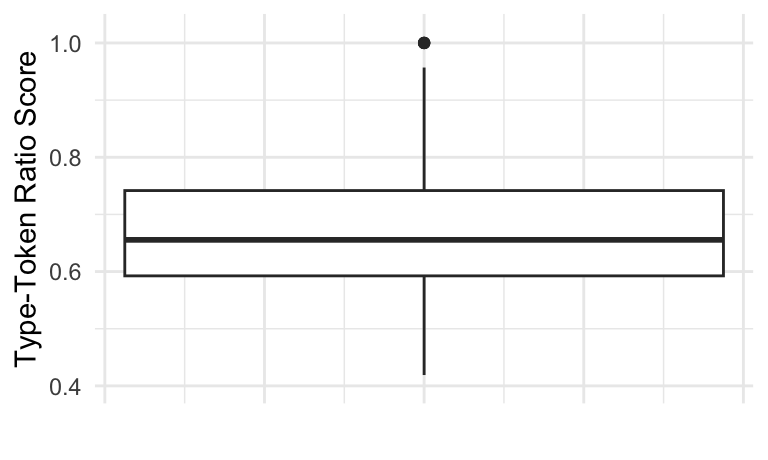
ttr.In Figure 3.4 we see a boxplot for ttr variable. The box in the middle of the plot represents the interquartile range (IQR) which is the range of values between the first quartile and the third quartile. The solid line in the middle of the box represents the median. The lines extending from the box are called ‘whiskers’ and provide the range of values which are within 1.5 times the IQR. Values outside of this range are plotted as individual points.
Now let’s consider boxplots from another angle. In Figure 3.5 (b) I’ve plotted the boxplot horizontally, right below the histogram in Figure 3.5 (a). In this view, we can see that a boxplot is a simplifed histogram augmented with central tendency and dispersion statistics. While histograms focus on the frequency distribution of data points, boxplots focus on the data’s quartiles and potential outliers.
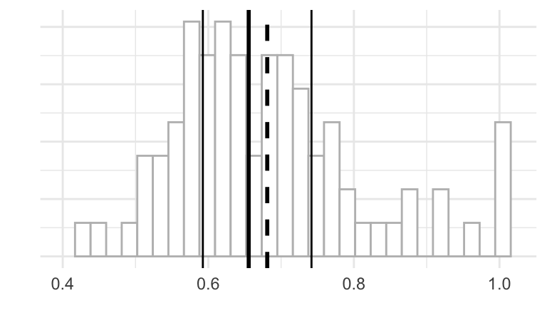
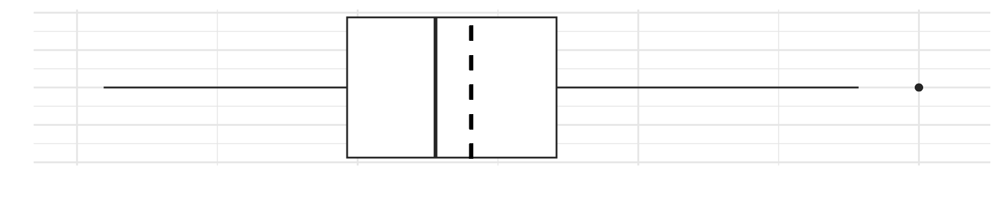
ttr.I’ve added a dashed line in Figure 3.5 (a) and Figure 3.5 (b) to signal the mean in this set of plots, but it is not typically included. I include the dashed line to make a point: the mean is more sensitive to outliers than the median. As I pointed out in Section 3.1.2.1, the mean is the sum of all values divided by the number of values. If there are extreme values, the mean will be pulled in the direction of the extreme values. The median, however, is the middle value and a few extreme values have less effect. So, when central tendency is reported, if there is a sizeable difference between the mean and the median, measures of dispersion will be larger and the direction of the difference can be used to infer the presence of outliers.
Returning to outliers, it is important to address them to safeguard the accuracy of the analysis. There are two main ways to address outliers: 1) transform the data and 2) eliminate observations with outliers (trimming). Trimming is more extreme as it removes data but can be the best approach for true outliers. Transforming the data is an approach to mitigating the influence of extreme but valid values. Transformation involves applying a mathematical function to the data which changes the scale and/ or shape of the distribution, but does not remove data nor does it change the relative order of the values.
In Figure 3.8, we see two boxplots. Figure 3.6 (a) is the original ttr data and Figure 3.6 (b) reflects the data trimmed to remove outliers. In this case, we have removed essays with a type-token ratio of 1.
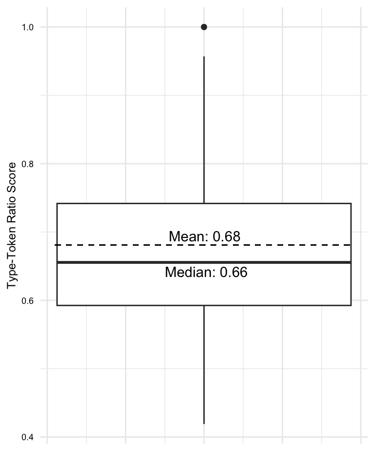
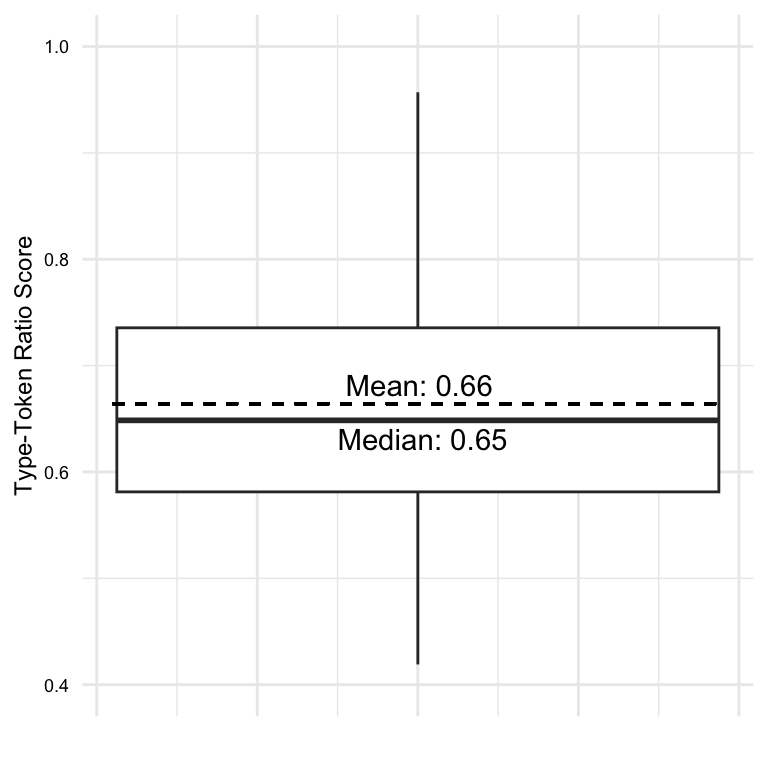
ttr before and after trimming.We can now appreciate the relatively larger effect that the outliers had on the mean value of the ttr variable. As outliers are removed as the difference between the mean and median will become smaller.
The exploration the data points with histograms and boxplots has helped us to identify outliers. Now we turn to the question of the overall shape of the distribution. The key question is whether the observed distribution of each variable approximates the Normal Distribution, or not.
The Normal Distribution is a theoretical distribution where the values are symmetrically dispersed around the central tendency (mean/ median). In terms we can now understand, this means that the mean and median are the same. The Normal Distribution is important because many statistical tests assume that the data distribution is normal or near normal.
Stepping away from our BELC dataset, I’ve created simulated data that fit normal and non-normal, or skewed, distributions. I present each of these distributions as density plots with mean and median line overlays in Figure 3.7.
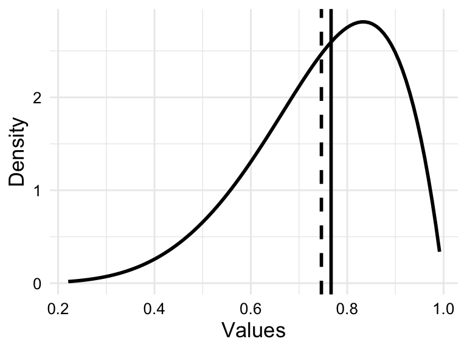
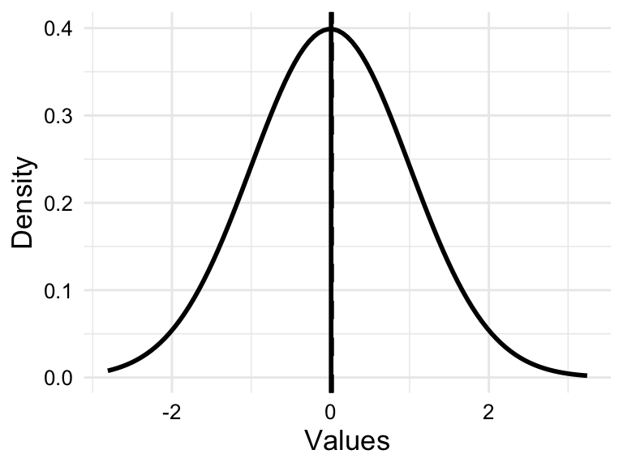
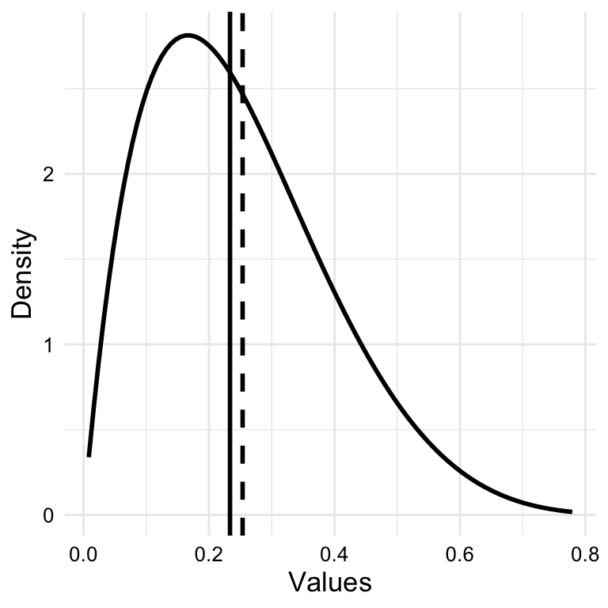
A Normal Distribution, illustrated in Figure 3.7 (b), is a distribution where the values are symmetrically dispersed around the central tendency (mean/ median). This means that in a theoretical distribution that the mean and median are the same. The Normal Distribution is also known as the Gaussian Distribution or the Bell Curve, for the hallmark bell shape of the distribution. In this distribution, extreme values are less likely than values near the center.
A skewed distribution is not a specific type of distribution but rather a characteristic than many distributions can exhibit where the values are not symmetrically dispersed around the central tendency. A distribution in which values tend to disperse to the left of the central tendency is left skewed as in Figure 3.7 (a) and dispersion to the right is right skewed as in Figure 3.7 (c).
Data that are normally, or near-normally distributed are often analyzed using parametric tests while data that exhibit a skewed distributed are often analyzed using non-parametric tests. Divergence from normality is not a binary distinction. Rather, it is a matter of degree. A visual inspection is usually sufficient for experienced researchers to determine whether a distribution is normal or skewed. However, for those who are less experienced or if you want to be more precise, there are two primary measures which can help ascertain the degree to which a distribution is normal: skewness and kurtosis. Skewness is a measure of the degree to which a distribution is asymmetrical. Kurtosis is a measure of the degree to which a distribution is peaked.
In Table 3.10 I provide the skewness and kurtosis scores for our simulated distributions along with central tendency measures for context.
| distribution | mean | median | histogram | skewness | kurtosis |
|---|---|---|---|---|---|
| Left skew | 0.746 | 0.767 | ▁▂▅▇▆ | -0.711 | 3.27 |
| Normal | 0.016 | 0.009 | ▁▅▇▃▁ | 0.065 | 2.93 |
| Right skew | 0.254 | 0.233 | ▆▇▅▂▁ | 0.711 | 3.27 |
All things distribution are matters of degree, so there are no hard and fast rules for determining whether a distribution is normal or skewed. However, there are some general guidelines that can be used to determine the degree to which a distribution is normal or skewed, as shown in Table 3.10.
Table 3.10: Rules of thumb for skewness and kurtosis scores.
| Score Range | Evaluation |
|---|---|
| -0.5 to 0.5 | Approximately symmetric |
| -1 to -0.5 or 0.5 to 1 | Moderately skewed |
| < -1 or > 1 | Highly skewed |
| Score Range | Evaluation |
|---|---|
| < 3 | Less peaked than normal |
| Equal to 3 | Normal peak |
| > 3 | More peaked than normal |
The question is which type of distribution does each numeric variable in the BELC dataset fit? Comparing the variables ttr, types and prop_l2 in Figure 3.8 to the three distributions in Figure 3.7, we see that all three numeric variables in the BELC dataset are skewed to some degree.
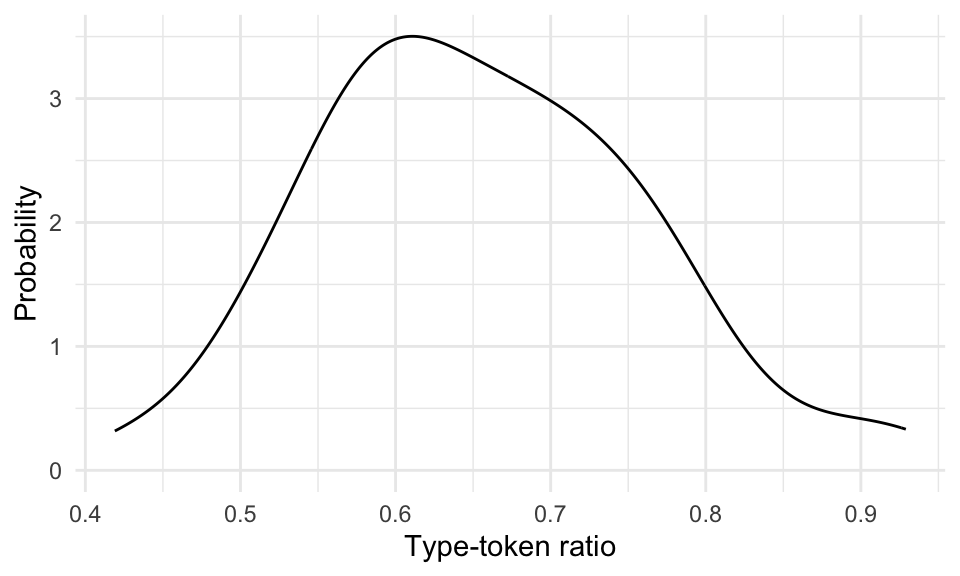
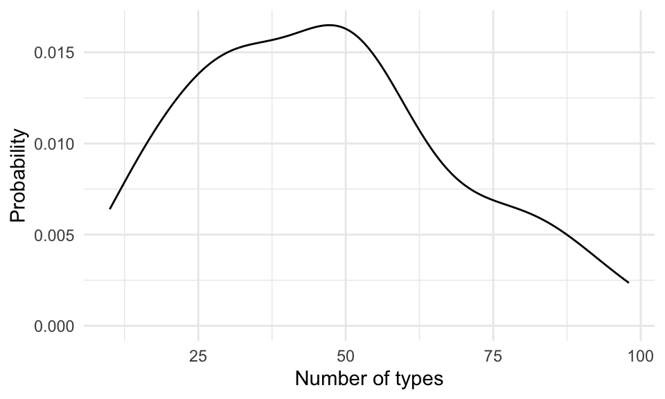
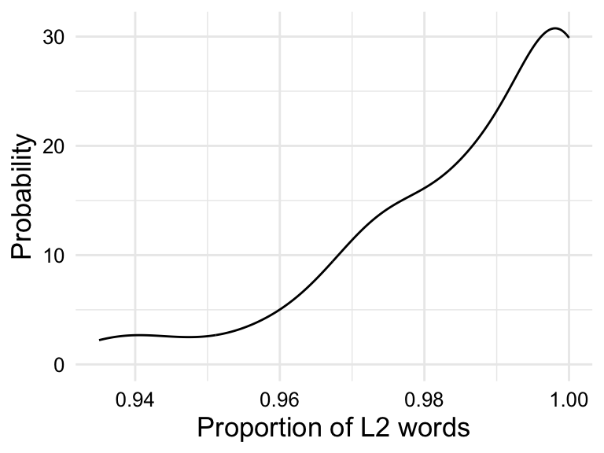
Figure 3.8 (a) for ttr has some right skewing but not as much as types in Figure 3.8 (b). prop_l2 in Figure 3.8 (c) is the most skewed of the three variables. As mentioned earlier, skewed distributions can take many forms, some are more skewed than others.
To view statistics on our three variables in Figure 3.8, we can calculate the skewness and kurtosis.
| distribution | mean | median | histogram | skewness | kurtosis |
|---|---|---|---|---|---|
| ttr | 0.655 | 0.648 | ▂▇▇▆▁ | 0.319 | 2.90 |
| types | 46.044 | 46.000 | ▅▇▇▃▂ | 0.407 | 2.45 |
| tokens | 75.338 | 77.000 | ▇▇▇▃▂ | 0.669 | 2.98 |
| prop_l2 | 0.986 | 0.990 | ▁▁▂▃▇ | -1.273 | 4.13 |
Given the characteristics of the numeric variables in the BELC dataset, although none of them are perfectly normal, but only prop_l2 is highly skewed. Therefore, if we intend to use these variables ‘as-is’ in statistical measures or tests, we now know whether to choose parametric or non-parametric alternatives.
In the case that a variable is highly skewed, it is often useful to attempt transform the variable to reduce the skewness. In contrast to scale-based transformations (e.g. centering and scaling), shape-based transformations change the scale and the shape of the distribution. The most common shape-based transformation is the logarithmic transformation. The logarithmic transformation (log-transformation) takes the log (typically base 10) of each value in a variable. The log-transformation is useful for reducing the skewness of a variable as it compresses large values and expands small values. If the skewness is due to these factors, the log-transformation can help.
It is important to note, however, that if scale-based transformations are to be applied to a variable, they should be applied after the log-transformation as the log of negative values is undefined.
Interdependence
We have covered the first three of the four questions we are interested in asking in a descriptive analysis. The fourth, and last, question is whether there is mutual dependence between variables. If so, what is the directionality and how strong is the dependence? Knowing the answers to these questions will help frame our approach to analysis.
To assess interdependence, the number and information types of the variables under consideration are important. Let’s start by considering two variables. If we are working with two variables, we are dealing with a bivariate relationship. Given there are three informational types (categorical, ordinal, and numeric), there are six logical bivariate combinations: categorical-categorical, categorical-ordinal, categorical-numeric, ordinal-ordinal, ordinal-numeric, and numeric-numeric.
The directionality of a relationship will take the form of a tabular or graphic summary depending on the informational value of the variables involved. In Table 3.12, we see the appropriate summary types for each of the six bivariate combinations.
| Categorical | Ordinal | Numeric | |
|---|---|---|---|
| Categorical | Contingency table | Contingency table/ Bar plot | Pivot table/ Boxplot |
| Ordinal | - | Contingency table/ Bar plot | Pivot table/ Boxplot |
| Numeric | - | - | Scatterplot |
Let’s first start with the combinations that include a categorical or ordinal variable. Categorical and ordinal variables reflect measures of class-type information, with add meaningful ranks to ordinal variables. To assess a relationship with these variable types, a table is always a good place to start. When combined together, a contingency table is the appropriate table. A contingency table is a cross-tabulation of two class-type variables, basically a two-way frequency table. This means that three of the six bivariate combinations are assessed with a contingency table: categorical-categorical, categorical-ordinal, and ordinal-ordinal.
In Table 3.13 we see contingency tables for the categorical variable sex and ordinal variable group in the BELC dataset.
Table 3.13: Contingency tables for categorical variable sex and ordinal variable group in the BELC dataset.
| group | female | male | Total |
|---|---|---|---|
| T1 | 7 | 9 | 16 |
| T2 | 11 | 4 | 15 |
| T3 | 13 | 10 | 23 |
| T4 | 9 | 5 | 14 |
| Total | 40 | 28 | 68 |
| group | female | male | Total |
|---|---|---|---|
| T1 | 43.75% | 56.25% | 100.00% |
| T2 | 73.33% | 26.67% | 100.00% |
| T3 | 56.52% | 43.48% | 100.00% |
| T4 | 64.29% | 35.71% | 100.00% |
| Total | 58.82% | 41.18% | 100.00% |
A contingency table may include only counts, as in Table 3.13 (a), or may include proportions or percentages in an effort to normalize the counts and make them more comparable, as in Table 3.13 (b).
It is sometimes helpful to visualize a contingency table as a bar plot when there are a larger number of levels in either or both of the variables. Again, looking at the relationship between sex and group, we see that we can plot the counts or the proportions. In Figure 3.9, we see both.
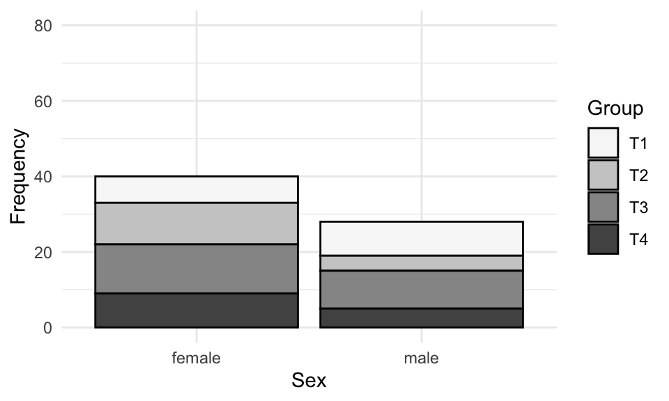
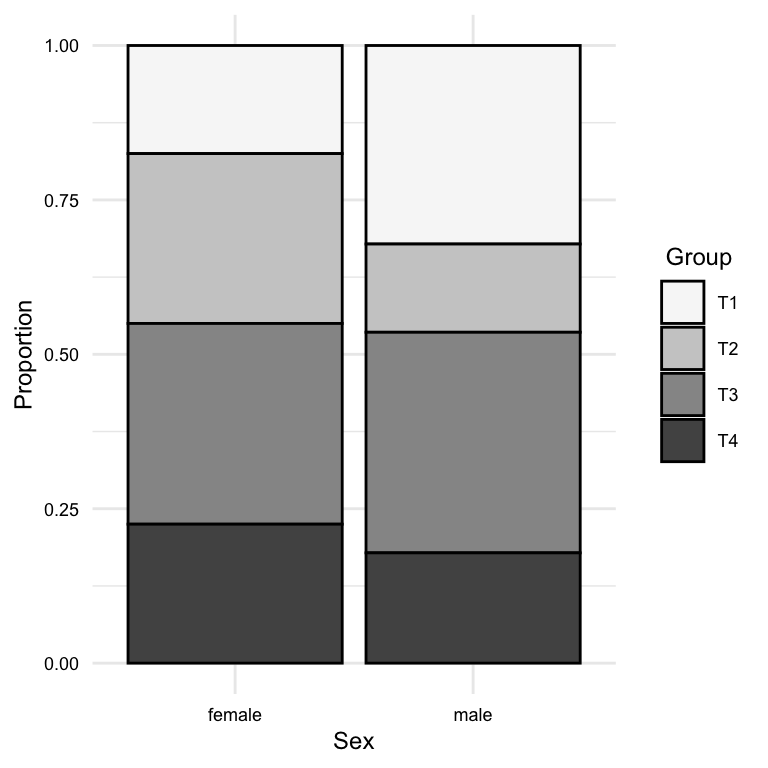
sex and group in the BELC dataset.To summarize and assess the relationship between a categorical or an ordinal variable and a numeric variable, we cannot use a contingency table. Instead, this type of relationship is best summarized in a table using a summary statistic in a pivot table. A pivot table is a table in which a class-type variable is used to group a numeric variable by some summary statistic appropriate for numeric variables, e.g. mean, median, standard deviation, etc.
In Table 3.14, we see a pivot table for the relationship between group and tokens in the BELC dataset. Specifically, we see the mean number of tokens by group.
| group | mean_tokens |
|---|---|
| T1 | 35.4 |
| T2 | 62.5 |
| T3 | 85.0 |
| T4 | 118.9 |
We see that the mean number of tokens increases from Group T1 to T4, which is consistent with the idea that the students in the higher groups are writing longer essays.
Although a pivot table may be appropriate for targeted numeric summaries, a visualization is often more informative for assessing the dispersion and distribution of a numeric variable by a categorical or ordinal variable. There are two main types of visualizations for this type of relationship: a boxplot and a violin plot. A violin plot is a visualization that summarizes the distribution of a numeric variable by a categorical or ordinal variable, adding the overall shape of the distribution, much as a density plot does for histograms.
In Figure 3.10, we see both a boxplot and a violin plot for the relationship between group and tokens in the BELC dataset.
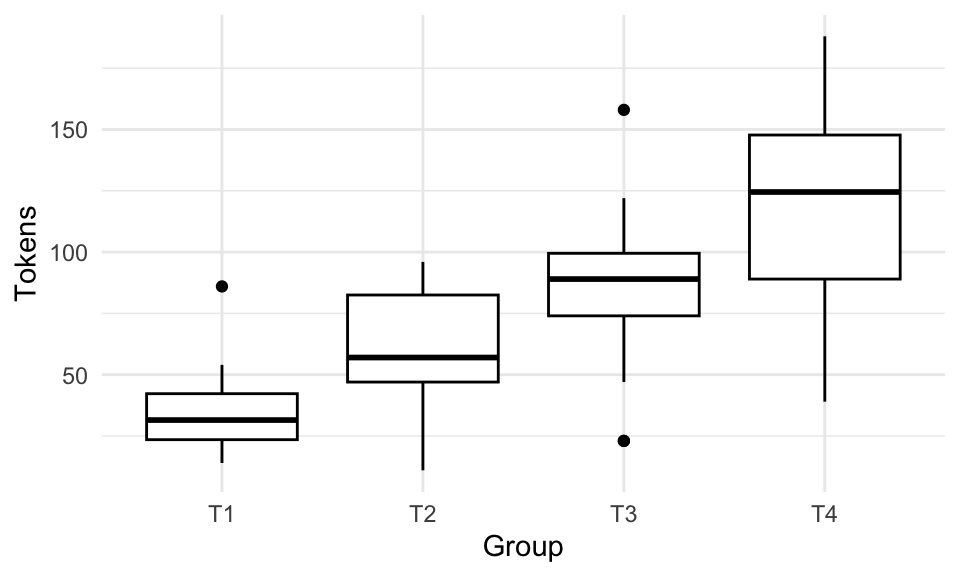
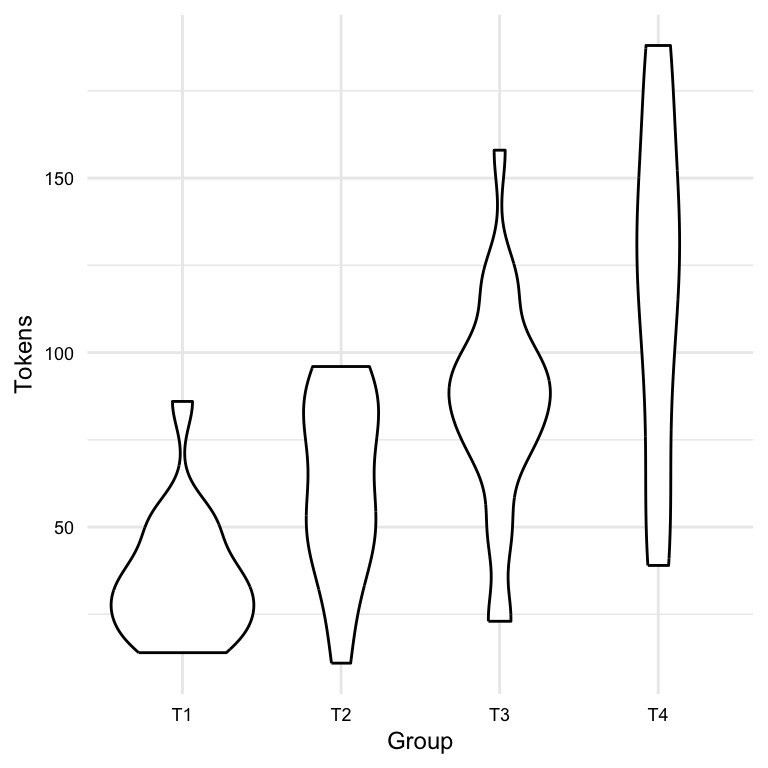
group and tokens in the BELC dataset.From the boxplot in Figure 3.10 (a), we see that the general trend towards more tokens used by students in higher groups. But we can also appreciate the dispersion of the data within each group looking at the boxes and whiskers. On the surface it appears that the data for groups T1 and T3 are closer to each other than groups T2 and T4, in which there is more variability within these groups. Furthermore, we can see outliers in groups T1 and T3, but not in groups T2 and T4. From the violin plot in Figure 3.10 (b), we can see the same information, but we can also see the overall shape of the distribution of tokens within each group. In this plot, it is very clear that group T4 includes a wide range of token counts.
The last bivariate combination is numeric-numeric. To summarize this type of relationship a scatterplot is used. A scatterplot is a visualization that plots each data point as a point in a two-dimensional space, with one numeric variable on the x-axis and the other numeric variable on the y-axis. Depending on the type of relationship you are trying to assess, you may want to add a trend line to the scatterplot. A trend line is a line that summarizes the overall trend in the relationship between the two numeric variables. To assess the extent to which the relationship is linear, a straight line is drawn which minimizes the distance between the line and the points.
In Figure 3.11, we see a scatterplot and a scatterplot with a trend line for the relationship between ttr and types in the BELC dataset.
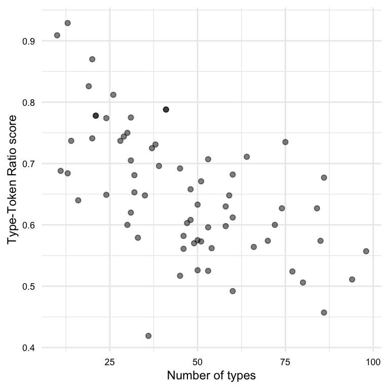
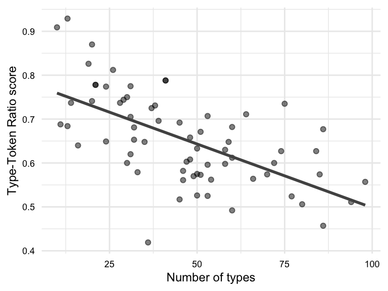
ttr and types in the BELC dataset.We see that there is an apparent positive relationship between these two variables, which is consistent with the idea that as the number of types increases, the type-token ratio increases. In other words, as the number of unique words increases, so does the lexical diversity of the text. Since we are evaluating a linear relationship, we are assessing the extent to which there is a correlation between ttr and types. A correlation simply means that as the values of one variable change, the values of the other variable change in a consistent manner.
Once a sense of the directionality of a relationship can be established, the next step is to gauge the relative strength, or association. Association refers to any relationship in which there is a dependency between two variables. Quantitative measures of association, in combination with tabular and visual summaries, can provide a more complete picture of the relationship between two variables.
There are a number of measures of assocation, depending on the types of variables being assessed and, for numeric variables, whether the distribution is normal (parametric) or non-normal (non-parametric), as seen in Table 3.15.
| Categorical | Ordinal | Numeric Non-parametric |
Numeric Parametric |
|
|---|---|---|---|---|
| Categorical | Chi-square \(\chi^2\), Cramér’s \(V\) | Goodman and Kruskal’s \(\gamma\) | Rank biserial Correlation | Point-biseral Correlation |
| Ordinal | - | Kendall’s \(\tau\) | Kendall’s \(\tau\) | Pearson’s \(r\) |
|
Numeric Non-parametric |
- | - | Kendall’s \(\tau\) | Pearson’s \(r\) |
|
Numeric Parametric |
- | - | - | Pearson’s \(r\) |
Association measures often are expressed as a number between -1 and 1, where 0 indicates no association, -1 indicates a perfect negative association, and 1 indicates a perfect positive association. The closer the number is to 0, the weaker the association. The closer the number is to -1 or 1, the stronger the association. Association statistics are often accompanied by a confidence interval (CI), which is a range of values that is likely to contain the true value of the association in the population. The confidence interval is expressed as a percentage, such as 95%, which means that if we were to repeat the study 100 times, 95 of those studies would produce a confidence interval that contains the true value of the association in the population. If the range between the lower and higher bounds of the confidence interval contains 0, then the association is likely no different than chance.
Given these measures and interpretations, let’s consider the different types of bivariate relationships we have seen so far in the BELC dataset. The first interdependence we explored involved the categorical variable sex and the ordinal variable group. This relationship may not be of primary interest to a study on L2 writing, but it is a good example of how to assess the strength of an association between a categorical and ordinal variable. Furthermore, it could be the case that we want to assess whether we have widely unbalanced female/ male proportions in our time groups.
Using Table 3.15, we see that we can use Goodman and Kruskal’s \(\gamma\) (gamma) to assess the strength of the association between these two variables. The measures of association in Table 3.16 suggest that the proportion of male participants is higher in group T1 and lower in group T2. However, these associations are moderately strong, as the gamma value is near \(\pm\) 0.4.
| Parameter1 | Parameter2 | r | CI | CI_low | CI_high |
|---|---|---|---|---|---|
| sex.female | group.T1 | -0.381 | 0.95 | -0.568 | -0.157 |
| sex.female | group.T2 | 0.389 | 0.95 | 0.167 | 0.575 |
| sex.male | group.T1 | 0.381 | 0.95 | 0.157 | 0.568 |
| sex.male | group.T2 | -0.389 | 0.95 | -0.575 | -0.167 |
When paired with Figure 3.9 we can appreciate that groups T1 and T2 have contrasting proportions of females to males and that groups T3 and T4 are more closely proportioned. This observation should be considered when approaching statistical analyses in which categorical variables required (near) equal proportions of categories.
Now let’s take a look at a more interesting relationship, the one between the ordinal variable group and the numeric variable tokens. Since we determined that tokens was near normally distributed, we can choose the parametric version of our association measure, Pearson’s \(r\). The measures of association in Table 3.17 suggest that there is a negative association between group T1 and a positive one betwen group T4 and tokens, which is consistent with the idea that as the group number increases, the number of tokens increases. These associations are moderate to strong, as the Pearson’s \(r\) values are near \(\pm\) 0.5. However, the other groups (T2 and T3) have very weak assocations with tokens and the CI includes 0, which means that the association is likely no different than chance.
| Parameter1 | Parameter2 | r | CI | CI_low | CI_high |
|---|---|---|---|---|---|
| group.T1 | tokens | -0.520 | 0.95 | -0.675 | -0.322 |
| group.T2 | tokens | -0.160 | 0.95 | -0.384 | 0.082 |
| group.T3 | tokens | 0.161 | 0.95 | -0.080 | 0.385 |
| group.T4 | tokens | 0.521 | 0.95 | 0.322 | 0.675 |
These association measures suggest that there is a relationship between group and tokens, but that the relationship is not the same for all groups. This may due to a number of factors, such as the number of participants in each group, the effect of outliers within particular levels, etc. or may simply underscore that the relationship between group and tokens is not linear. What we do with this information will depend on our research aims. Whatever the case, we can use these measures to inform our next steps, as we will see in the next section.
Finally, let’s look at the relationship between the numeric variables ttr and types. Since we determined both ttr and types are normally distributed, we can choose the parametric version of our association measure, Pearson’s \(r\). The measures of association in Table 3.18 suggest that there is a negative association between ttr and types, which is consistent with the idea that as the number of types increases, the type-token ratio decreases. This association is strong, as Pearson’s \(r\) value is near 0.6.
| Parameter1 | Parameter2 | r | CI | CI_low | CI_high |
|---|---|---|---|---|---|
| ttr | types | -0.606 | 0.95 | -0.738 | -0.43 |
Before moving on to the next section, it is important to remember than through the process of diagnostic measures, we gain a thorough understanding of our data’s characteristics and quality, preparing us for the next step in our analysis. However, remember that these measures do not exist in isolation. The decisions we make at this stage, from handling missing data to understanding the distribution of our variables, can have significant implications on our subsequent analysis. So, this initial step of data analysis deserves our careful attention and scrutiny.
3.2 Analyze
Having ensured that our dataset is clean, valid, and thoroughly understood, we can proceed to the next key stage of our data analysis process - employing analytic methods. The goal of analysis, generally, is to generate knowledge from information. The type of knowledge generated and the process by which it is generated, however, differ and can be broadly grouped into three analysis types: exploratory, predictive, and inferential.
In this section I will provide an overview of how each of these analysis types are tied to research aims and how the general purpose of each type affect: (1) how to identify the variables of interest, (2) how to interrogate these variables, and (3) how to interpret the results. I will structure the discussion of these analysis types moving from the least structured (inductive) to most structured (deductive) approach to deriving knowledge from information with the aim to provide enough information for you to identify these research approaches in the literature and to make appropriate decisions as to which approach your research should adopt.
3.2.1 Explore
In Exploratory Data Analysis (EDA), we use a variety of methods to identify patterns, trends, and relations within and between variables. The goal of EDA is uncover insights in an inductive, data-driven manner. That is to say, that we do not enter into EDA with a fixed hypothesis in mind, but rather we explore intuition, probe anecdote, and follow hunches to identify patterns and relationships and to evaluate whether and why they are meaningful. We are admittedly treading new or unfamiliar terrain letting the data guide our analysis. This means that we can use and reuse the same data to explore different angles and approaches adjusting our methods and measures as we go. In this way, EDA is an iterative, meaning generating process.
In line with the investigative nature of EDA, the identification of variables of interest is a discovery process. We most likely have a intution about the variables we would like to explore, but we are able to adjust our variables as need be to suit our research aims. When the identification and selection of variables is open, the process is known as feature engineering. A process that is much an art as a science, feature engineering leverages a mixture of relevant domain knowledge, intuition, and trial and error to identify features that serve to best represent the data and to best serve the research aims. Furthermore, the roles of features in EDA are fluid –no variable has a special status, as seen in Figure 3.12. We will see that in other types of analysis, some or all the roles of the variables are fixed.
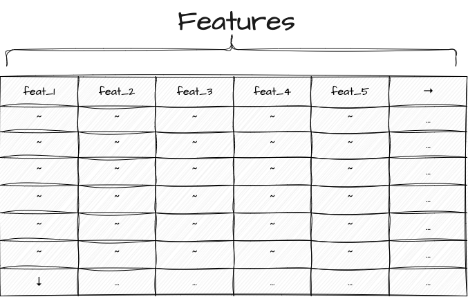
For illustrative purposes let’s consider the State of the Union Corpus (SOTU) (Benoit 2020). The presidential addresses and a set of metadata variables are included in the corpus. I’ve subsetted this corpus to only include U.S. presidents since 1946. A tabular preview of the first 10 addresses (truncated for display) can be found in Table 3.19.
| president | date | delivery | party | addresses |
|---|---|---|---|---|
| Truman | 1946-01-21 | written | Democratic | To the Congress of the United States: A quarter… |
| Truman | 1947-01-06 | spoken | Democratic | Mr. President, Mr. Speaker, Members of the Cong… |
| Truman | 1948-01-07 | spoken | Democratic | Mr. President, Mr. Speaker, and Members of the … |
| Truman | 1949-01-05 | spoken | Democratic | Mr. President, Mr. Speaker, Members of the Cong… |
| Truman | 1950-01-04 | spoken | Democratic | Mr. President, Mr. Speaker, Members of the Cong… |
| Truman | 1951-01-08 | spoken | Democratic | Mr. President, Mr. Speaker, Members of the Cong… |
| Truman | 1952-01-09 | spoken | Democratic | Mr. President, Mr. Speaker, Members of the Cong… |
| Truman | 1953-01-07 | written | Democratic | To the Congress of the United States: I have th… |
| Eisenhower | 1953-02-02 | spoken | Republican | Mr. President, Mr. Speaker, Members of the Eigh… |
| Eisenhower | 1954-01-07 | spoken | Republican | Mr. President, Mr. Speaker, Members of the Eigh… |
A dataset such as this one could serve as a starting point to explore many different types of research questions. In order to maintain research coherence so our efforts to not careen into a free-for-all, we need to tether our feature engineering to a unit of analysis that is relevant to the research question. A unit of analysis is the entity that we are interested in studying. Not to be confused with the unit of observation, which is the entity that we are able to observe and measure.
To demonstrate the distinction, let’s look consider different approaches to analyzing the SOTU dataset. For example, the unit of analysis could be the language of particular presidents, party ideology, or political rhetoric in general and the unit of observation could be individual words, phrases, sentences, etc. In some cases the unit of analysis and the unit of observation are the same. For example, if we were interested in potential changes use of the word “terrorist” over time in SOTU addresses, the unit of analysis and the unit of observation would be the same –individual addresses. So, depending on the perspective we are interested in investigating, the choice of how to approach engineering features to gain insight will vary.
By the same token, approaches for interrogating the dataset can differ significantly, between research projects and within the same project, but for instructive purposes, let’s draw a distinction between descriptive methods and unsupervised learning methods, as seen in Table 3.20.
| Descriptive methods | Unsupervised learning methods |
|---|---|
| Frequency analysis | Cluster analysis |
| Keyness analysis | Topic Modeling |
| Co-occurence analysis | Vector Space Models |
The first group, descriptive methods can be seen as a (more robust) extenstion of the descriptive statistics covered earlier in this chapter including statistic, tabular, and visual techniques. For example, a frequency analysis of the SOTU dataset could be used to identify the most common words used by U.S. political parties in their addresses, in Figure 3.13 (a), or a co-occurence analysis could be used to identify the most common words the appear after the term “free”, in Figure 3.13 (b), in the dataset.
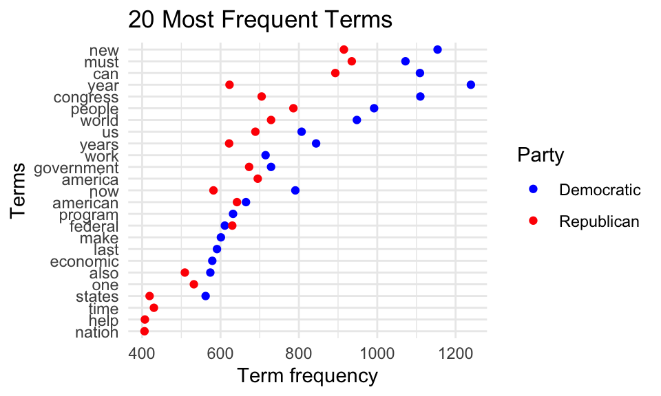
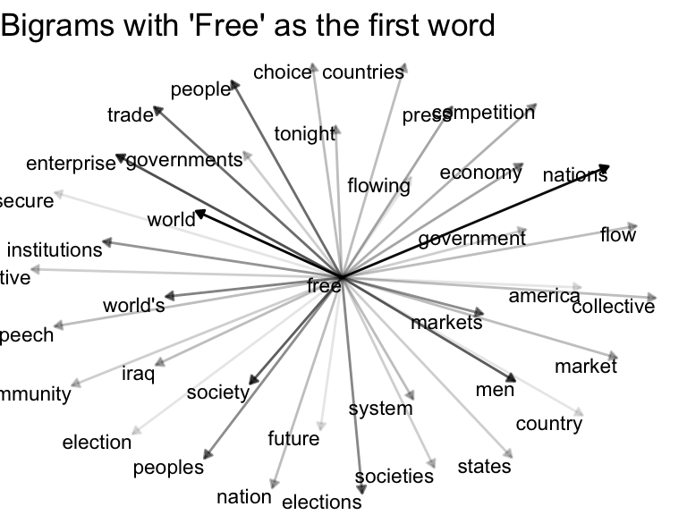
The second group, unsupervised learning is a subtype of machine learning in which an algorithm is used to find patterns within and between variables in the data without any guidance (supervision). In this way, the algorithm, or machine learner, is left to make connections and associations wherever they may appear in the input data. If we were interested in finding word-use continuities and discontinuities between presidents, we could use a clustering algorithm, seen in Figure 3.14 (a). Or if we wanted to uncover themes … [ADD: modify plot] we could use a vector space model, as in Figure 3.14 (b).
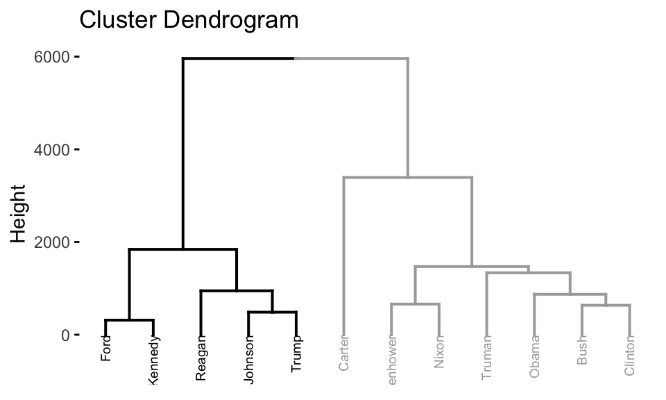
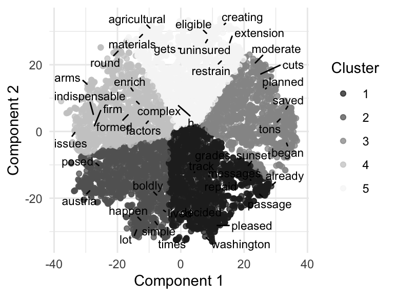
Either through descriptive, unsupervised learning methods, or a combination of both, EDA employs quantitative methods to summarize, reduce, and sort complex datasets in order to provide the researcher novel perspective to be qualitatively assessed. Exploratory methods produce results that require associative thinking and pattern detection. Speculative as they are, the results from exploratory methods can be highly informative and lead to new insight and inspire further study in directions that may not have been expected.
3.2.2 Predict
Predictive Data Analysis (PDA) employs a variety of techniques to examine and evaluate the association strength between a variable or set of variables, with a specific focus on predicting a target variable. The aim of PDA is to construct models that can accurately forecast future outcomes, using either data-driven or theory-driven approaches. In this process, supervised learning methods, where the machine learning algorithm is guided (supervised) by a target outcome variable, are used. This means we don’t begin PDA with a completely open-ended exploration, but rather with an objective - accurate predictions. However, the path to achieving this objective can be flexible, allowing us freedom to adjust our models and methods. Unlike EDA, where the entire dataset can be reused for different approaches, PDA requires a portion of the data to be reserved for evaluation, enhancing the validity of our predictive models. Thus, PDA is an iterative process that combines the flexibility of exploratory analysis with the rigor of confirmatory analysis.
There are two types of variables in PDA: the outcome variable and the predictor variables, or features. The outcome variable is the variable that the researcher is trying to predict. It is the only variable that is necessarily fixed as part of the research question. The features are the variables that are used to predict the outcome variable. An overview of the roles of these variables in PDA is shown in Figure 3.15.

Feature selection can be either data-driven or theory-driven. Data-driven features are those that are engineered to enhance predictive power, while theory-driven features are those that are selected based on theoretical relevance.
Let’s consider the Europarl corpus of native, non-native and translated texts (ENNTT) (Nisioi et al. 23-28, 2016-05). This is a monolingual English corpus of translated and non-translated texts from the European Parliament.
| variable | name | variable_type | description |
|---|---|---|---|
| session_id | Session ID | categorical | Unique identifier for each session |
| seq_speaker_id | Sequential Speaker ID | ordinal | Unique numeric identifier for each speaker |
| state | State | categorical | Country of the session speaker |
| language | Language | categorical | Original language in which the sentence was uttered |
| type | Type | categorical | Category of the speaker: natives, nonnatives, or translations |
| text | Text | categorical | Text spoken in the session |
Now depending on our research question, we will have a different outcome variable. If we want to examine the potential linguistic differences between native and non-native speakers, we will select our outcome variable to be the type (natives/ nonnatives). The features selected to use to predict type depend on our research question. If our research is guided by data, we will choose features that are specifically designed to boost the ability to predict. On the other hand, if our research is steered by theory, we will opt for features that are chosen due to their theoretical significance. In either case, the original dataset will likely need to be transformed.
The approach to interrogating the dataset includes three main steps: feature engineering, model selection, and model evaluation. We’ve discussed feature engineering, so what is model selection and model evaluation? And how do we go about performing these steps?
Model selection is the process of choosing a machine learning algorithm and set of features that produces the best prediction accuracy for the outcome variable. To refine our approach such that we arrive at the best combination of algorithm and features, we need to train our machine learner on a variety of combinations and evaluate the accuracy of each. We don’t want to train and evaluate on the same data, as this would be cheating, and likely would not produce a model that generalizes well to new data. Instead, we split our data into two sets: a training set and a test set. The training set is used to train the machine learner, while the test set is used to evaluate the accuracy of the model1. The larger portion of the data, from 60% to 80%, is used for training, while the remaining portion is used for testing.
The elephant in the room is, what type of machine learning algorithm do I use? Well, there are many different types of machine learning algorithms, each with their own strengths and weaknesses. The first rough cut is to decide what type of outcome variable we are predicting: categorical or numeric. If the outcome variable is categorical, we are performing a classification task, and if the outcome variable is numeric, we are performing a regression task. As we see in Table 3.22, there are various algorithms that can be used for each task.
| Classification | Regression | Learner type |
|---|---|---|
| Logistic Regression | Linear Regression | Interpretable |
| Decision Tree | Regression Tree | Interpretable |
| Support Vector Machine | Support Vector Regression | Black box |
| Multilayer Perceptron | Multilayer Perceptron | Black box |
I’ve included a column in Table 3.22 that charaterizes a second consideration which is whether we want an interpretable model or a black box model. When talking about whether a model is interpretable or not, we are not referring to the evaluation of the accuracy of the model. Rather, we are referring to the inner workings of the model itself that allow us to understand how the model is making its predictions. An interpretable model is one that can be understood and explored by humans, while a black box model is one whose inner workings are not trivially unraveled. The advantage of an interpretable model is that it researchers can go beyond evaluating prediction accuracy and probe feature-outcome associations. On the other hand, if the goal is to simply boost prediction accuracy, interpretability may not be a concern.
Finally, there are a number of algorithm-specific strengths and weaknesses to be considered in the process of model selection. These hinge on characteristics of the data, such as the size of the dataset, the number of features, the type of features, and the expected type of relationships between features or on computing resources, such as the amount of time available to train the model or the amount of memory available to store the model.
Model evaluation is the process of assessing the accuracy of the model on the test set, which is a proxy for how well the model will generalize to new data. Model evaluation is performed quantitatively by calculating the accuracy of the model on the training, to develop the model, and ultimately, the test set. The accuracy of a model is calculated by comparing the predicted values to the actual values. For the results of classification tasks, this results in a contingency table, known as a confusion matrix. A confusion matrix juxtaposes predicted and actual values allowing various metrics to be calculated, for example in Table 3.23.
| Predicted: natives | Predicted: nonnatives | |
|---|---|---|
| Actual: natives | 26294 (90% of 29215) | 2921 (10% of 29215) |
| Actual: nonnatives | 730 (10% of 7304) | 6574 (90% of 7304) |
Since regression tasks predict numeric values, the accuracy of the model is calculated by comparing the difference between the predicted and actual values.
It is important to note that whether the accuracy metrics are good is to some degree qualitative judgment. For example, classification accuracy overall may be relatively high, but the model may be performing poorly on one of the classes. In this case, the model may not be useful for the task at hand, despite the overall accuracy.
In the end, PDA offers a versitle path to discover data-driven insights, to probe theory-driven associations, or even simply to perform tasks that are too complex or time-consuming for humans to perform.
3.2.3 Infer
The most commonly recognized of the three data analysis approaches, Inferential data analysis (IDA) is the bread-and-butter of science. IDA is a deductive, theory-driven approach in which all aspects of analysis stem from a pre-determined premise, or hypothesis, about the nature of a relationship in the world and then aims to test whether this relationship is statistically supported given the evidence. Since the goal is to infer conclusions about a certain relationship in the population based on a statistical evaluation of a (corpus) sample, the representativeness of the sample is of utmost importance. Furthermore, the use of the data is limited to the scope of the hypothesis –that is, the data cannot be used for exploratory purposes.
The selection of variables and the roles they play in the analysis are determined by the hypothesis. In a nutshell, a hypothesis is a formal statement about the state of the world. This statement is theory-driven meaning that it is predicated on previous research. We are not exploring or examining relationships, rather we are testing a specific relationship. In practice, however, we are in fact proposing two mutally exclusive hypotheses. The first is the Alternative Hypothesis, or \(H_1\). This is the hypothesis I just described –the statement grounded in the previous literature outlining a predicted relationship. The second is the Null Hypothesis, or \(H_0\). This is the flip-side of the hypothesis testing coin and states that there is no difference or relationship. Together \(H_1\) and \(H_0\) cover all logical outcomes.
To connect hypotheses to variable selection and variable roles, let’s consider a study in which a researcher is investigating the claim that men and women differ in terms of the number of questions they use in spontaneous conversations. The unit of analysis is individuals (i.e. men and women) and the unit of observation is (sponteanous) conversations.
A dataset based on the Switchboard Dialog Act Corpus (SWDA) (University of Colorado Boulder 2008), seen in Table 3.24, aligns well with this investigation. It is a large collection of transcribed telephone conversations between strangers. The dataset includes gender information for each participant and dialog act annotation for each utterance, including a range of question types.
| variable | name | variable_type | description |
|---|---|---|---|
| doc_id | Document ID | numeric | The unique identifier for each document |
| speaker_id | Speaker ID | numeric | The unique identifier for each speaker |
| sex | Sex | categorical | The sex or gender of the speaker, either 'Male' or 'Female' |
| damsl_tag | DAMSL Tag | categorical | The Dialogue Act Markup in Several Layers (DAMSL) tag classification |
| utterance_text | Utterance Text | categorical | The transcription of what the speaker said in the document |
The Alternative Hypothesis may be formulated in this way:
\(H_1\): Men and women differ in the frequency of the use of questions in spontaneous conversations.
The Null Hypothesis, then, would be a statement describing the remaining logical outcomes. Specifically:
\(H_0\): Men and women do not differ in the frequency of the use of questions in spontaneous conversations.
Now, in standard IDA one variable is the dependent variable and one or more variables are predictor variables. The dependent variable, sometimes referred to as the outcome or response variable, is the variable which contains the information which is hypothesized to depend on the information in the predictor variable(s). It is the variable whose variation a research study seeks to explain. A predictor variable, sometimes referred to as a independent or explanatory variable, is a variable whose variation is hypothesized to explain the variation in the dependent variable.
Returning to our hypothetical study and the hypotheses presented, we can identify the variables in our study and map them to their roles. The frequency of questions used by each speaker would be our dependent variable and the biological sex of the speakers our predictor variable. This is so because \(H_1\) states the proposition that a speaker’s sex will predict the frequency of questions used. The next step would be to operationalize what we mean by ‘frequency of questions’ and then transform the dataset to reflect this definition.
In our hypothetical study we’ve identified two variables, one dependent and one predictor. It is important keep in mind that there can be multiple predictor variables in cases where the dependent variable’s variation is predicted to be related to multiple variables. This relationship would need to be explicitly part of the original hypothesis, however. Due to the increasing difficulty for interpretation, in practice, IDA studies rarely include more than two or three predictor variables in the same analysis.
Predictor variables add to the complexity of a study because they are part of our research focus, specifically our hypothesis. It is, however, common to include other variables which are not of central focus, but are commonly assumed to contribute to the explanation of the variation of the dependent variable. Let’s assume that the background literature suggests that the age of speakers also plays a role in the number of questions that men and women use in spontaneous conversation. Let’s also assume that the data we have collected includes information about the age of speakers. If we would like to factor out the potential influence of age on the use of questions and focus on the particular predictor variables we’ve defined in our hypothesis, we can include the age of speakers as a control variable. A control variable will be added to the statistical analysis and documented in our report but it will not be included in the hypothesis nor interpreted in our results.
We can now see in Figure 3.16 the variables roles assigned to variables in a hypothesis-driven study.
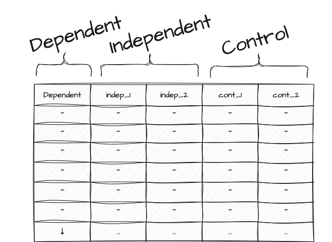
At this point let’s look at the main characteristics that need to be taken into account to statistically interrogate the variables we have chosen to test our hypothesis. The type of statistical test that one chooses is based on (1) the informational value of the dependent variable and (2) the number of predictor variables included in the analysis. Together these two characteristics go a long way in determining the appropriate class of statistical test, but other considerations about the distribution of particular variables (i.e. normality), relationships between variables (i.e. independence), and expected directionality of the predicted effect may condition the appropriate method to be applied.
As you can imagine, there are a host of combinations and statistical tests that apply in particular scenarios, too many to consider in given the scope of this coursebook (see Gries (2013) and Paquot and Gries (2020) for a more exhaustive description). Below I’ve summarized some common statistical scenarios and their associated tests which focus on the juxtaposition of informational values and the number of variables, leaving aside alternative tests which deal with non-normal distributions, ordinal variables, etc.
In Table 3.25 we see monofactorial tests, tests with only one predictor variable.
| Dependent | Predictor | Test |
|---|---|---|
| Categorical | Categorical | Pearson's Chi-squared test |
| Numeric | Categorical | Student's t-Test |
| Numeric | Numeric | Pearson's correlation test |
Table 3.26 includes a listing of multifactorial tests, tests with more than one predictor and/ or control variables.
| Dependent | Predictor | Control | Test |
|---|---|---|---|
| Categorical | varied | varied | Logistic regression |
| Numeric | varied | varied | Linear regression |
IDA relies heavily on quantitative evaluation methods to draw conclusions that can be generalized to the target population. It is key to understand that our goal in hypothesis testing is not to find evidence in support of \(H_1\), but rather to assess the likelihood that we can reliably reject \(H_0\). The metric used to determine if there is sufficient evidence is based on the probability that given the nature of the relationship and the characteristics of the data, the likelihood of there being no difference or relationship is low. The threshold for likelihood has traditionally been summarized in the \(p\)-value statistic. In the Social Sciences, a \(p\)-value lower than .05 is considered statistically significant which when interpreted correctly means that there is more than a 95% chance that the observed relationship would not be predicted by \(H_0\). Note that we are working in the realm of probability, not in absolutes, therefore an analysis that produces a significant result does not prove \(H_1\) is correct or that \(H_0\) is incorrect, for that matter. A margin of error is always present. For this reason, other metrics such as effect size and confidence intervals are also used to interpret the results of statistical tests.
3.3 Communicate
Conducting research should be enjoyable and personally rewarding but the effort you have invested and knowledge you have generated should be shared with others. Whether part of a blog, presentation, journal article, or for your own purposes it is important to document your analysis results and process in a way that is informative and interpretable. This enhances the value of your work, allowing others to learn from your experience and build on your findings.
3.3.1 Report
The most widely recognized form of communicating research is through a report. A report is a narrative of your analysis, including the research question, the data you used, the methods you applied, and the results you obtained. We are both reporting our findings and documenting our process to inform others of what we did and why we did it but also to invite readers to evaluate our findings for themselves. The scientific process is a collaborative one and evaluation by peers is a key component of the process.
The audience for your report will determine the level of detail and the type of information you will need to include in your report but there are some common elements to reference in any report. First, the research question and/ or hypothesis should be clearly stated and the motivation for the question should be explained. This will help the reader understand the context of the analysis and the importance of the results. Second, diagnostic procedures to verifiy or describe the data should be explained. This may include anomaly correction, missing data, data transformation, etc. and/ or descriptive summaries of the data including assessments of individual variables (central tendency, dispersion, distribution) and/ or relationships between variables (association strength). Third, a blueprint of the methods used will describe the variable selection process, how the variables are operationalized, what analysis methods are employed, and how the variables are used in the statistical analysis. Fourth, the results from the analysis are reported. Reporting details will depend on the type of analysis and the particular method(s) employed. For inferential analyses this will include the test statistic(s) and some measure of confidence. In predictive analyses, accuracy results will be reported. For exploratory analyses, the reporting of results will vary and often include visualizations and metrics that require more human interpretation than the other analysis types. Finally, the results are interpreted in light of the research question and/ or hypothesis. This will include a discussion of the limitations of the analysis and a discussion of the implications of the results for future research.
3.3.2 Document
While a good report will include the most vital information to understand the procedures, results, and findings of an analysis, there is much more information generated in the course of an analysis which does not traditionally appear in prose. If a research project is conducted programmatically, however, data, code, and documentation can be made available to others as part of the communication process. Increasingly, researchers are sharing their data and code as part of the publication process. This allows others to reproduce the analysis and verify the results contributing to the collaborative nature of the scientific process. [CITATION]
Together, data, code, and documentation form a research compendium. As you can imagine the research process can quickly become complex and unwieldy as the number of files and folders grows. If not organized properly, it can be difficult to find the information you need. Furthermore, if not documented, decisions made in the course of the analysis can be difficult or impossible to trace. For this reason it is recommendable to follow a set of best practices for organizing and documenting your research compendium.
We will have more to say about this in the next chapter but for now it will suffice to point to some key elements in a research compendium. First, the data used in the analysis should be saved as a separate file(s). As a given research project progresses to analysis, the data may be transformed and manipulated to best fit the needs of the analysis. Preserving the data at each stage adds to the complete picture of the data from collection to analysis. Second, since you are working programmatically, you can share your precise analysis step-by-step in code form. This allows others to reproduce your analysis and verify your results. Including code comments provides additional information to communicate the steps taken and your thought process. Finally, a codebook documents any additional information that helps understand the research better. This will often include guides for installing software and running the code to reproduce the analysis and an overview of the aims of the scripts and the contents of the data and datasets.
Summary
In this chapter we have focused on description and analysis –the third component of DIKI Hierarchy. This process is visually summarized in Figure 3.17.

Building on the strategies covered in Chapter 2 “Understanding data” to derive a rich relational dataset, in this chapter we outlined key points in approaching analysis. The first key step in any analysis is to perform a diagnostic assessment of the individual variables and relationships between variables. To select the appropriate descriptive measures we covered the various informational values that a variable can take. In addition to providing key information for reporting purposes, descriptive measures are important to explore so the researcher can get a better feel for the dataset before conducting an analysis.
We outlined three data analysis types in this chapter: exploratory, predictive, and inferential. Each of these embodies distinct approaches to deriving knowledge from data. Ultimately the choice of analysis type is highly dependent on the goals of the research. Inferential analysis is centered around the goal of testing a hypothesis, and for this reason it is the most highly structured approach to analysis. This structure is aimed at providing the mechanisms to draw conclusions from the results that can be generalized to the target population. Predictive analysis has a less-ambitious but at times more relevant goal of examining the extent to which a given relationship can be established from the data to provide a model of language that can accurately predict an outcome using new data. This methodology is highly effective for applying different algorithmic approaches and examining relationships between an outcome variable and various configurations of variables. The ability to explore the data in multiple ways, is also a key strength of employing an exploratory analysis. The least structured and most variable of the analysis types, exploratory analyses are a powerful approach to generating knowledge from data in an area where clear predictions cannot be made.
I rounded out this chapter with a short description of the importance of communicating the analysis process and results. Reporting, in its traditional form, is documented in prose in an article. This reporting aims to provide the key information that a reader will need to understand what was done, how it was done, and why it was done. This information also provides the necessary information for reader’s with a critical eye to understand the analysis in more detail. Yet even the most detailed reporting in a write-up still leaves many practical, but key, points of the analysis obscured. A programming approach provides the procedural steps taken that when shared provide the exact methods applied. Together with the write-up, a research compendium which provides the scripts to run the analysis and documentation on how to run the analysis forms an integral part of creating reproducible research.
Activities
- Add description of outcomes …
Questions
Depending on the application and the amount of available data, a third development set is sometimes created as a pseudo test set to facilitate the testing of multiple approaches on data outside the training set before the final evaluation on the test set is performed.↩︎